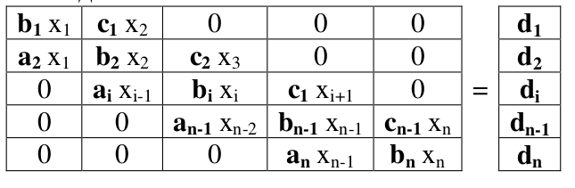
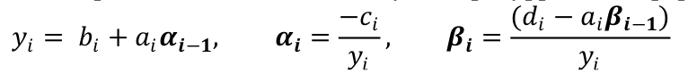
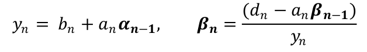
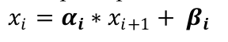

| Matrix (A) | Result (B) | ||
|---|---|---|---|
Mетод прогонки является частным случаем метода Гаусса и используется для решения систем линейных уравнений вида Ax = B, где A - трёхдиагональная матрица. Трёхдиагональной матрицей называется матрица такого вида, где во всех остальных местах, кроме главной диагонали и двух соседних с ней, стоят нули.
Mетод прогонки состоит из двух этапов: прямой прогонки и обратной прогонки. На первом этапе определяются прогоночные коэффициенты, а на втором – находят неизвестные x.
Алгоритм выполнения метода прогонки
СЛАУ имеет вид:
Прямая прогонка состоит в вычислении прогоночных коэффициентов αi и βi , где i – номер строки матрицы. Этот этап выполняется при i = 1...n строго по возрастанию значения i.
1. В первой строке матрицы (i = 1) используются формулы

2. Для строк i от 2 до n-1 используются рекуррентные формулы: 
3. При i = n прямая прогонка завершается вычислением:

После этого производится обратная прогонка, в которой происходит вычисление неизвестных xi.
Этот этап выполняется при i = n...1 строго поубыванию значения i.
4. В последней строке матрицы (i = n) xn = βn
5. Для всех остальных строк при i от n-1 до 1 применяется формула:

Пример решение слау по алгоритму
Возьмём систему уравнений:
Прямой Ход
Обратный Ход
Второй Пример
СЛАУ задана расширенной матрицей коэффициентов:
Замечание: при записи результатов отображать будем только 3 цифры после запятой
Метод прогонки является упрощенным методом Гаусса и применяется к трехдиагональным матрицам.
В условии этой задачи система задана именно такой матрицей, т.е. ненулевые элементы стоят
на главной диагонали и на двух её окружающих. Общий вид уравнение в системе:
aixi-1 + bixi + cixi+1 = di
Прямой ход 1)
2)
3)
4)
5)
После прямого хода расширенная матрица коэффициентов принимает вид:
Получили что,
,
формула для обратного хода: